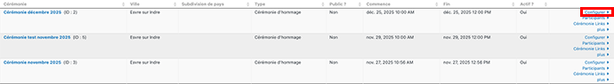

Créer une cérémonie depuis un modèle¶
Allez dans Cérémonies > Nouvelle Cérémonie.
Dans From Modèle, choisissez le modèle que vous souhaitez utiliser.
Les informations provenant du Modèle s'affichent.
Complétez les champs suivants :
- Cérémonie Titre : ajoutez la date de la cérémonie.
Ce champ sera utilisé dans les courriels destinés aux participants, - Dates et heures de Début et de Fin.
Cliquez sur Suivant pour afficher les informations de localisation, elles aussi reprises du Modèle.
Modifiez éventuellement et Enregistrer.
Normalement les onglets Localisation et Communication n'ont pas à être modifiés.
Pour voir les cérémonies disponibles¶
Allez à : Cérémonies > Gérer les Cérémonies
Vous pouvez éditer les propriétés d'une cérémonie en cliquant sur Configurer.
